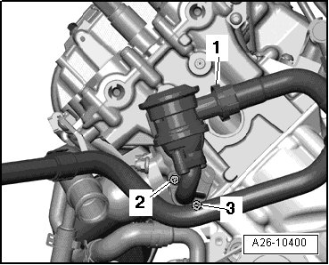
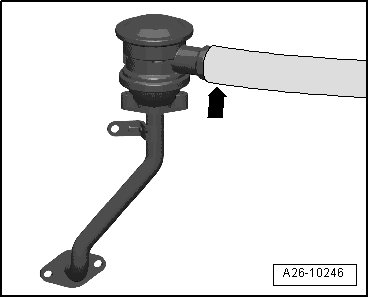

Secondary Air Injection Combination Valve, Checking
Secondary Air Injection Combination Valve, Checking
Procedure
• Hose connections properly sealed.
- Disconnect air guide hose - 1 - from Secondary Air Injection (AIR) combination valve.
• The cylinder bank 1 (right) AIR combination valve is shown in the illustration.
• Ignore - 2 - and - 3 -.

- Connect an appropriate assisting hose - arrow - to AIR combination valve.

- Blow into the assisting hose using light pressure (do not use pressurized air).
• AIR combination valve must be closed, it must not be possible to blow through.
- Blow into the assisting hose using higher pressure (do not use pressurized air).
• The AIR combination valve must open, it must be possible to blow through.
If the switching point is not recognized:
- Replace AIR combination valve.